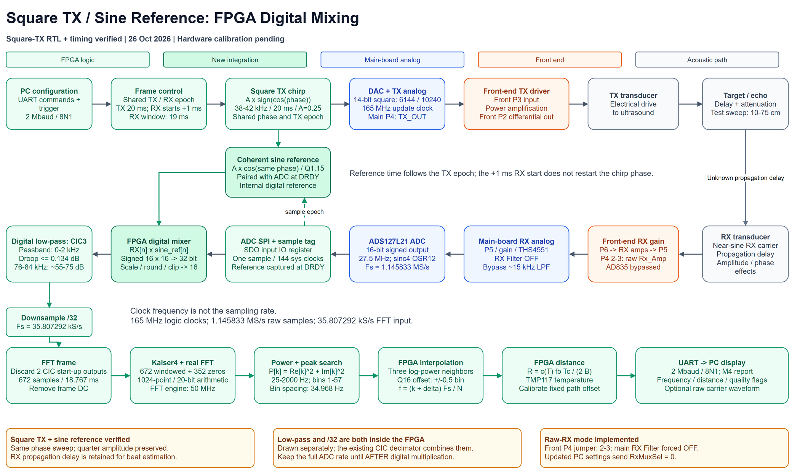
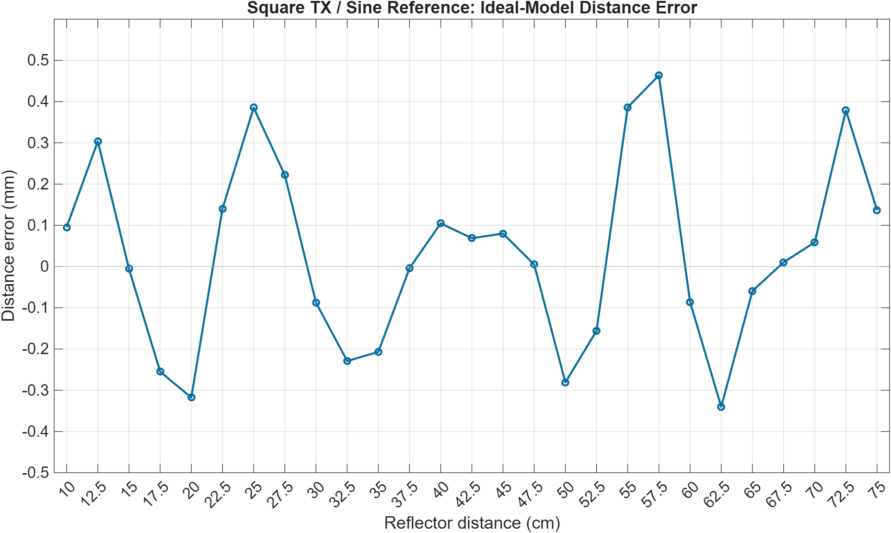
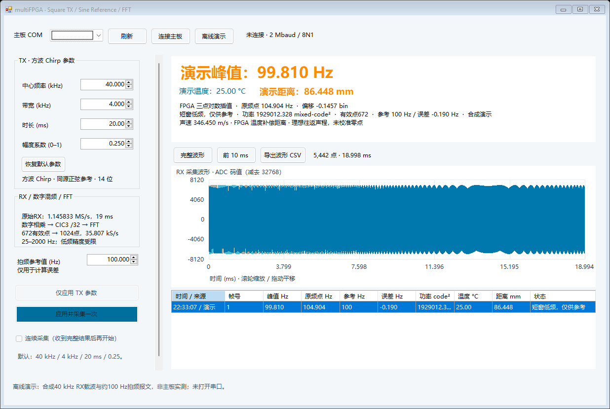

2026-10-26。修正位于 15_UsMimoTestBench_multiFPGA；原工作工程与 original 备份未修改。本次构建尚未实板验证。
新版 Main SOF · 新版上位机 · 流程图 · 检查数据 · 仿真及编译证据

同一个相位 phi(t) = 2*pi*(38000*t + 0.5*200000*t^2)
├─ 方波 A*sign(cos(phi(t))) → DAC / 发射驱动 / TX 换能器
└─ 正弦 A*cos(phi(t)) → FPGA 内部数字参考
回波 → RX 换能器 → 原始载波 ADC → RX[n] × sine_reference[n]
→ CIC3 低通 /32 → Kaiser4 → FFT → 搜峰 → 插值 → 距离 → UART
两个参考波形同时生成、使用相同相位和时间起点。回波则含传播延迟 tau；理想接收基波为 G*(4A/pi)*cos(phi(t-tau))。因此同一时刻接收频率与参考频率相差斜率×tau，保留这个差才能测距。参考采用内部数字正弦，不需要再用一个ADC采样参考。
“方波经过换能器后近似正弦”在本次仿真中按仅保留基波建模，4/pi来自理想对称方波的傅里叶基波系数。真实换能器会改变幅度、相位和群延迟，基波模型没有证明真实声学通道仅影响幅度。
时序修复：ADC SDO先由输入IO寄存器采入，串行移位器读取该寄存值，完整字提交延后一拍；不改变外部采样边沿、ADC采样率或DRDY对应参考。乘法器增加一级输入寄存器成为三级流水，数值和吞吐率不变。1,714组乘法、200个SPI字配对及完整Main重新验证，约束没有放宽。
40kHz中心、4kHz带宽、20ms、幅度0.25。系统/DAC165MHz；ADC1.145833MS/s；RX延迟1ms后采19ms。先全速数字相乘，再CIC3低通/32到35.807292kS/s；672个有效点加Kaiser beta=4，补352零到1024点FFT。
| 检查 | 结果 |
|---|---|
| 真实 Intel Chirp IP | 20ms内5001个4us时间检查点，方波与正弦符号一致；拟合起止频率38,000.014 / 41,999.968Hz。另测幅度0、0.125、0.5、1。MainTX参数、启动及20/80ms计数配置通过。 |
| 27个距离点 | 10–75cm，每2.5cm。每帧21,770原始样本，672有效点；CIC和全部513个FFT功率与独立定点参考一致。最大误差0.463747mm，RMSE 0.225219mm。 |
| 完整 Main | 真实ADC SPI及144系统周期采样节拍、数字混频/低通/FFT/插值/温度距离、5442波形样本、11058字节完整波形+M4通过。25°C下50cm模型输出577.391280Hz、500.093mm。 |
| 生产上位机 | 方波设置包、raw RX配置、完整RF测试报文、波形与M4解析及既有异常测试通过。 |
| 完整编译与时序 | 84项时序检查通过，最差裕量+0.071ns；未约束时钟、输入/输出路径统计为0。详细资源和警告见证据包内Fitter报告及编译日志。 |
27点向量压缩了空闲时钟。完整Main测试保留实际ADC SPI节拍，但TX数学、PLL、温度、ADC模拟输入和原始缓存存储采用行为模型；UART字节握手加速。真实Intel Chirp IP另测，不能将分层测试描述为完整物理换能器仿真。未变化的乘法边界/ADC配对/串口逐位测试记录保留在上一版模块验证。

同步方波/正弦原始检查点CSV（4us检查点，不是完整165MHz DAC记录）。
最终资源：8,730 / 56,480 ALM，45 / 156 DSP，273 / 686 RAM块；系统/DAC仍为165MHz。

离线合成演示，未打开COM口。
python 02_RTL/V0/Simulation/FFT/run_main.py --tx python 02_RTL/V0/Simulation/FFT/run_digital_mixer.py --square-tx python 02_RTL/V0/Simulation/FFT/run_digital_mixer.py --frames python 02_RTL/V0/Simulation/FFT/run_digital_mixer.py --top
Questa仿真按顺序运行，避免单会话许可证冲突。
| Distance/cm | Ideal/Hz | RTL/Hz | Error/mm |
|---|---|---|---|
| 10 | 116.618076 | 116.729158 | +0.095253 |
| 12.5 | 145.772595 | 146.126743 | +0.303682 |
| 15 | 174.927114 | 174.920860 | -0.005362 |
| 17.5 | 204.081633 | 203.784342 | -0.254927 |
| 20 | 233.236152 | 232.865520 | -0.317817 |
| 22.5 | 262.390671 | 262.554434 | +0.140427 |
| 25 | 291.545190 | 291.994705 | +0.385459 |
| 27.5 | 320.699708 | 320.958497 | +0.221912 |
| 30 | 349.854227 | 349.752081 | -0.087590 |
| 32.5 | 379.008746 | 378.741485 | -0.229177 |
| 35 | 408.163265 | 407.921907 | -0.206965 |
| 37.5 | 437.317784 | 437.313089 | -0.004026 |
| 40 | 466.472303 | 466.594356 | +0.104660 |
| 42.5 | 495.626822 | 495.707015 | +0.068765 |
| 45 | 524.781341 | 524.874631 | +0.079996 |
| 47.5 | 553.935860 | 553.941403 | +0.004753 |
| 50 | 583.090379 | 582.762732 | -0.280957 |
| 52.5 | 612.244898 | 612.063207 | -0.155800 |
| 55 | 641.399417 | 641.849765 | +0.386174 |
| 57.5 | 670.553936 | 671.094749 | +0.463747 |
| 60 | 699.708455 | 699.608208 | -0.085961 |
| 62.5 | 728.862974 | 728.466354 | -0.340101 |
| 65 | 758.017493 | 757.948243 | -0.059381 |
| 67.5 | 787.172012 | 787.184157 | +0.010414 |
| 70 | 816.326531 | 816.394992 | +0.058706 |
| 72.5 | 845.481050 | 845.922768 | +0.378774 |
| 75 | 874.635569 | 874.794253 | +0.136072 |
SOF SHA256：d83136b1530341af5195e5e8135eee4d34cfb9d772135106a8a81ba950cc96c1
GUI SHA256：466aed0c3b1830df3bc3ce69c7f53996268aa99b7a1fa94760ad3bc5be129cc3